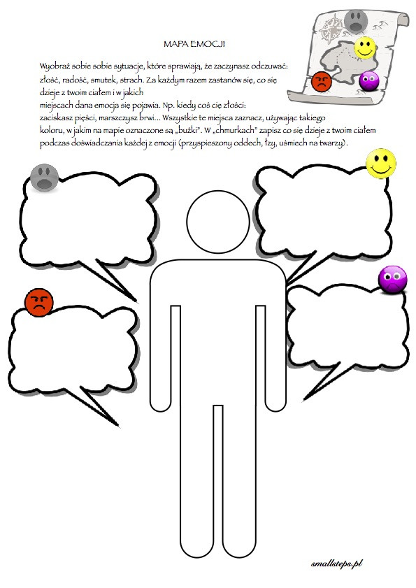

Klasa 7A
wychowawca Ewa Lipińska-KrzemianowskaCHEMIA
Temat: Sprawdzian
Odpowiedz na pytania:
1. Napisz wzór chemiczny wody.
2. Uzupełnij
Woda:
Stany skupienia - 1......................2..........................3..........................
Barwa-
Zapach-
Temperatura wrzenia-
3. Narysuj obieg wody w przyrodzie - schemat.
4. Oblicz stężenie procentowe roztwory (Cp) wiedząc że w 100 g roztworu jest 50 g substancji rozpuszczonej.
5. Napisz co się stanie ze śniegiem, który spadł w temperatutrze +6 stopni C. Dlaczego tak się stanie?
6. Nazwij zjawisko (np. parowanie, topnienie itp)
Woda zamieniła się (przemiana fazowa) w lód -........................
Lód zamienił się(przemiana fazowa) w wodę - ..........................
Woda zamienia się w parę wodną - ...........................
Para wodna zamienia się w wodę - .......................
FIZYKA
Temat: Wyznaczanie gęstości substancji na podstawie prawa Archimedesa.
zapisz do zeszytu:
Prawo Archimedesa.
Na każde ciało zanurzone w cieczy lub gazie działa zwrócona w górę siła wyporu, której wartość jest równa ciężarowi wypartej cieczy lub gazu.
Gęstość substancji (d ) obliczamy dzieląc masę substancji m przez
jej objętość V
d =m : V
Masę ciała znajdziemy ważąc je. Objętość znajdziemy korzystając z prawa Archimedesa, mierząc objętość wypartej przez to ciało wody. Podstawiając do wzoru obliczymy gęstość ciała. Z tabel możemy odczytać jakie gęstości mają różne ciała.
zad.1.
Zobacz film https://www.youtube.com/watch?v=TulFtxO6l6w&t=196s
Zapisz jeden przykład obliczania gęstości
Lekcje z fizyki i innych przedmiotów możesz obejrzeć w internecie : https://vod.tvp.pl/website/szkola-z-tvp-klasa-7,47303112
MATEMATYKA
Temat: Potęgowanie potęgi
Zapisz do zeszytu:
Potęgując potęgę mnożymy wykładniki, a podstawę pozostawiamy bez zmiany
np .(a3)2 = a6
(x5)4 = x2°
zad.1.
Zobacz film https://www.youtube.com/watch?v=J0r7extoQN0
Zapisz przykłady z filmu do zeszytu.
zad.2.
Otwórz wirtualny zeszyt ćwiczeń kl 7a na str. 97 https://flipbook.apps.gwo.pl/display/2364
zrób z zad.1, przykłady a), b), c), d)
JĘZYK POLSKI
Temat: Oglądanie filmu Mój biegun
Zobacz zwiastun filmu:
https://www.filmweb.pl/video/Zwiastun/M%C3%B3j+biegun+Zwiastun+nr+1-31923
Notatka:
Film- "Mój biegun to prawdziwa historia Jaśka Meli- opowieść o rodzinie, która musi zmierzyć się z kalectwem syna i która wychodzi z tej próby zwycięsko. Dzieło Marcina Głowackiego przedstawia Jana nie jako ofiarę, nad którą widz powinien się litować. Głównego bohatera nie określa jego kalectwo to zwyczajny nastolatek, któremu przytrafił się straszny w swych konsekwencjach wypadek. Jasiek przeżywa typowe dla swojego wieku trudy dojrzewania: buntuje się, pyskuje i kłóci z rodzicami.
Główną osią fabularną filmu są relacje Jaśka z ojcem człowiekiem wymagającym, nieraz wręcz despotycznym, narzucającym dyscyplinę, którą wyjątkowo trudno zaakceptować, gdy ma się kilkanaście lat...
JĘZYK ANGIELSKI
Dzisiaj pośpiewamy i poruszamy się troszeczkę, a przy okazji powtórzymy części ciała.
Lesson
Topic: Dont just seat! Move! - Nie siedź tylko! Rusz się!
Poznamy dzisiaj trzy piosenki, w notatce pod tematem wypiszemy tylko trzy tytuły naszych piosenek, a pod każdym tytułem nowe słowa lub zwroty, które się w niej pojawiają:
1. Na rozgrzewkę zaczniemy od piosenki Head, Soulders, Knees and Toes którą znajdziesz tutaj:
https://www.youtube.com/watch?v=YBJ_-MyV2rU odsłuchaj piosenkę, a potem włącz jeszcze raz i spróbuj naśladować chłopca z piosenki, który wskazuje części ciała.
Nowe słówko w piosence:
Toes palce u stóp (palce u dłoni to Fingers)
2. Druga piosenka to Clap your hands a znajdziesz ją tutaj:
https://www.youtube.com/watch?v=C3c8fzbsfOE
obejrzyj i posłuchaj, a następnie spróbuj zaśpiewać i robić to, co dzieci w piosence. Pod spodem znajdziesz listę zwrotów, które przepiszesz do zeszytu.
Nowe zwroty w piosence:
Clap your hands klaszcz w ręce
Pat your knees klepnij się w kolana
Stomp your feet tupaj nogą
Blink your eyes zamrugaj oczami
Wiggle your ears poruszaj uszami
3. Trzecia piosenka to If youre happy and you know it (Jeśli jesteś wesoły I o tym wiesz), a znajdziesz ją tutaj:
https://www.youtube.com/watch?v=71hqRT9U0wg
Obejrzyj i posłuchaj, a następnie spróbuj zaśpiewać i robić to, co dzieci w piosence. Pod spodem znajdziesz listę zwrotów, które przepiszesz do zeszytu. Turn around obróć się
Wiggle your hipps poruszaj biodrami
Stretch your arms rozciągnij ramiona (ręce)
Pat your head poklep się po głowie
Touch your nose dotknij nosa
Point your toes wskazuj palcami u stóp
Shout hello krzycz cześć
Mam nadzieję, że dobrze się dzisiaj bawiliście, no i że się trochę poruszaliście ;)
Pozdrawiam!
ZAJĘCIA TERAPEUTYCZNO -USPRAWNIAJĄCE - TANECZNE
Sara M,Laura M,Patrycja B,Sebastian CH,Maciej K
Mam nadzieję,że opanowaliście pierwsze elementy z filmiku. Trudność może sprawić marsz po "trójkącie" tzn w przód i wracamy tyłem po skosie z akcentem kolana (3 figura). Kolejną figurą są obroty wychodzące z kroku bachaty czyli refren w utworze.
W wolnej chwili możecie poćwiczyć też z batonem czyli domowym ołówkiem.
ZAJĘCIA TERAPEUTYCZNO -USPRAWNIAJĄCE -RUCHOWE
Temat i zadanie wysłane pocztą elektroniczną do rodziców
ZAJĘCIA ARTYSTYCZNE -MUZYCZNE (Patryk H., Emilia O., Oleh K.)
Temat i zadanie wysłane pocztą elektroniczną do rodziców.
ZAJĘCIA REWALIDACYJNE- USPRAWNIANIE MOWY
Zajęcia rewalidacyjne - usprawnianie mowy- zestaw ćwiczeń wysłany na grupę logopedyczną Messenger
(Julia, Damian , Kinga )
TECHNIKA /PRACOWNIA GOSPODARSTWA DOMOWEGO
Temat: Haftowana serwetka ( 3,4)
Dla przypomnienia napisałam jakie materiały i narzędzia są nam potrzebne do wykonania serwetki oraz plan pracy.
I. Materiały i narzędzia potrzebne do wykonania haftu ręcznego: ołówek, kawałek tkaniny, igłę z dużym oczkiem, nożyczki i kolorowa nitki, tamborek( jeśli ktoś ma w domu).
II. Plan pracy:
1. Przygotowanie materiałów i narzędzi
2. Wycięcie z tkaniny kwadratu o wymiarach 20cmx 20cm
3. Narysowanie na tkaninie linii za pomocą ołówka
4. Nawlekanie nitki na igłę i zrobienie supełka
5. Wyszywanie ściegów wg wzoru
6. Prace wykończeniowe
7. Pranie i prasowanie serwetki
Obejrzyj film jeszcze raz. Zobaczysz jak można zrobić serwetkę wykorzystując różne ściegi ozdobne.
https://www.youtube.com/watch?v=kKnBUa4l2k4
Obejrzyj jeszcze raz tylko fragment filmu od 2: 35 minuty.
https://www.youtube.com/watch?v=kKnBUa4l2k4
Rozpoczniemy wyszywać serwetkę trzecim prostym ściegiem.
3. Ścieg łańcuszek
Obejrzyj jeszcze raz tylko fragment filmu od 3:40 minuty.
https://www.youtube.com/watch?v=kKnBUa4l2k4
4 ścieg
Wzorując się na filmie wykonaj na swojej tkaninie trzeci i czwarty ścieg. Nie spiesz się. Wykonuj pracę powoli i dokładnie. Bądź ostrożny podczas posługiwania się ostrymi narzędziami. Prześlij zdjęcie swojej pracy na adres e mail.
TECHNIKA / GRUPA STOLARNIA
Proszę zapisać w zeszycie:
Lekcja
Temat: Narzędzia przechowywanie i konserwacja.
Obejrzyj film:
https://www.youtube.com/watch?v=_2Xn4MOIog4
Adam Słodowy to kultowy popularyzator majsterkowania, autor i prowadzący programu telewizyjnego Zrób to sam (19591983), autor książek i scenariuszy.
Zadanie
1. Wymień narzędzia do metalu jakie zaobserwowałeś w filmie.
2. W jaki sposób należy dbać o narzędzia, które mają ruchome części?
3. Jakie narzędzia pokazane w filmie znajdują się w Twoim domu?
Odpowiedzi zapisz w zeszycie, zrób zdjęcie i wyślij na mój email
JĘZYK ANGIELSKI
Lesson
Topic: Body parts części ciała kontynuacja
Dzisiaj znowu zaczniemy od obejrzenia filmu jednak w ramach powtórzenia oglądamy od początku do końca, tak aby przypomnieć sobie słówka z poprzedniej lekcji i poznać nowe. https://www.youtube.com/watch?v=SUt8q0EKbms
Poniżej znajduje się druga część listy z częściami ciała z filmu, przepisz ją do zeszytu i przetłumacz słówka na język angielski. Jeżeli nie znasz znaczenia słów użyj słownika: https://pl.pons.com/t%C5%82umaczenie/angielski-polski
Neck -
Shoulders -
Stomach -
Hips -
Arms -
Hands -
Legs -
Feet
Dla lepszego zapamiętania wszystkich części ciała narysuj w zeszycie ludzką postać kobietę lub mężczyznę i podpisz po angielsku części ciała wymienione na naszej liście. Jeżeli masz kłopot z narysowaniem postaci, możesz wyciąć jakąś postać ze zdjęcia w starej gazecie lub ulotce i wkleić ją do zeszytu zamiast rysunku. Oczywiście wycinamy taką postać, aby można było podpisać wszystkie części ciała. Czy będzie to rysunek, czy wycinanka wybór należy do Ciebie.
Pozdrawiam!
ZAJĘCIA TERAPEUTYCZNO-USPRAWNIAJĄCE/MUZYCZNE
e-mail:muzykamg@wp.pl
(Patryk H. i Damian P.)
Wysłuchaj nagranie i odpowiedz pisemnie :
Z jakiego regionu folklorystycznego Polski pochodzi ten znany utwór
O jakim mieście jest mowa w piosence?
https://www.youtube.com/watch?v=qpGltT0ow90
ZAJĘCIA POZALEKCYJNE TECHNICZNE
Temat i zadanie wysłane pocztą elektroniczną do rodziców.
ZAJĘCIA TERAPEUTYCZNO -USPRAWNIAJĄCE - MATEMATYKA
(Olek, Laura, Sara, Kinga)
Ćwiczymy potęgowanie. Przepisz przykłady z filmu :https://www.youtube.com/watch?v=hxnE9m65MsM
ZAJECIA TERAPEUTYCZNO -USPRAWNIAJĄCE - JĘZYK POLSKI
(Patrycja, Sebastian, Maciej K.)
Zabawa z gramatyką
https://www.youtube.com/watch?v=GrXu3NHLQBE
BIOFEEDBACK
Zestaw ćwiczeń wysłany pocztą elektroniczną do rodziców.
WYCHOWANIE FIZYCZNE/DZIEWCZYNKI
Temat :Doskonalenie techniki rzutu do kosza
zostańwdomu#trenuj w domu !!!
Przypominam o zasadach bhp podczas ćwiczeń w domu,tak jak na lekcjach wf w szkole. Proszę również pamiętać, że ćwiczymy tylko i wyłącznie jak jesteśmy zdrowi.
Pamiętajmy przed rozpoczęciem ćwiczeń ,aby zrobić 10 minutową rozgrzewkę (ćwiczenia pamiętamy z lekcji)
Potzebne przybory: piłka lub papier toaletowy
proszę wykonać ćwiczenia w domu lub na świeżym powietrzu
https://youtu.be/7RQc5g3cXIY
WYCHOWANIE FIZYCZNE/CHŁOPCY
Temat : Ćwiczenia ogólnorozwojowe
Uwagi wstępne :
1. Starajmy się ćwiczyć w stroju sportowym
2.Przed ćwiczeniami wietrzymy pokój lub ćwiczymy przy otwartym oknie
bądź uchylonym
3.Ćwiczymy tylko jak jesteśmy zdrowi
4. Dbamy o bezpieczeństwo
5.Wszystkie ćwiczenia wykonujemy starannie
6. Każdą aktywność fizyczną poprzedzamy rozgrzewką (ok. 10-15 min.)
Propozycje ćwiczeń na dzień dzisiejszy:
1.Bieg w miejscu z wysokim unoszeniem kolan (liczymy do 40)
2. Wykonujemy 15 przysiadów z krzesła - 2x
3. Skłony tułowia w przód do prawej i lewej nogi - 10 powtórzeń
4. Wchodzimy na krzesło i schodzimy z niego(na początku upewniamy się że jest stabilne i nie zagraża bezpieczeństwu.) z zachowaniem następującej kolejności:prawa noga pierwsza wchodzi i schodzi z krzesła - 5x
5.W leżeniu tyłem ,nogi ugięte ,ramiona skrzyżnie złożone na klatce piersiowej,
wykonujemy 15 brzuszków - 2x
6 Kończymy ćwiczeniami oddechowymi,w postawie swobodnej ,unosimy ramiona w górę (wdech ) i opuszczamy wydech- 7x
Dziękuję za dzisiejszy. wkład pracy
JĘZYK POLSKI
Temat: Piszemy rozprawkę
Zadanie dla Sebastiana, Macieja , Macieja, Laury, Patryka , Olka
W oparciu o poprzednią lekcję napiszcie rozprawkę na temat-
Jak myślisz czy Santiago zwyciężył czy przegrał ?
Pamiętajcie!
I Wstęp ( 2 zdania)
II ROZWINIĘCIE (6 zdań)
Teza-2 argumenty na tak
lub Antyteza
2 argumenty na tak , że zwyciężył
- 2 argumenty na nie, że przegrał
III Zakończenie (2 zdania)
Powodzenia
Zadanie dla Kingi, Emilki, Patrycji, Sary, Julki, Damiana-
Wymień 2 argumenty, że Santiago zwyciężył.
Powodzenia
HISTORIA
TEMAT: Narodziny faszyzmu we Włoszech
Obejrzyj film: https://www.youtube.com/watch?v=yoNhOjWIEAI
Zapisz do zeszytu:
Faszyzm - totalitarna forma rządów z dyktaturą nieomylnego wodza i podporządkowaną mu elitą władzy.
1919 r. - byli oficerowie i żołnierze zaczęli tworzyć związki kombatanckie pod dowództwem Benity Mussoliniego. związki kombatanckie zostały przekształcone w Narodową Partię Faszystowską. Po 1926 roku Mussolini stał się nieograniczonym dyktatorem. Podlegał mu parlament, rząd, sądownictwo i partia. Mianował członków Wielkiej Rady Faszystowskiej i przybrał tytuł duce, co dosłownie oznacza wódz.
Zadanie domowe:
Napisz w 3 zdaniach kim był Benito Mussolini
GEOGRAFIA
Temat: Zanieczyszczenie środowiska przyrodniczego.
Przepisz notatkę do zeszytu:
Wprowadzanie szkodliwych substancji do powietrza, wód i gleb, oprócz negatywnego wpływu na kondycję przyrody, stanowi bezpośrednie zagrożenia zdrowia ludzi. Jeszcze kilka wieków temu w środowisku dominowały zanieczyszczenia pochodzenia naturalnego. Źródłami zanieczyszczeń powietrza były wybuchy wulkanów, pożary lasów, pył kosmiczny.
Zobaczcie skąd biorą się zanieczyszczenia w naszych gospodarstwach domowych:
https://www.youtube.com/watch?v=UfnFm98heqQ
Przepisz notatkę do zeszytu:
Wraz z rozwojem miast, gospodarczej działalności człowieka, ośrodków przemysłowych, do otoczenia zaczęto odprowadzać coraz więcej szkodliwych substancji. W największym stopniu środowisko zanieczyszczają emisje i odpady przemysłowe z fabryk i elektrowni, rolnictwo, transport. Ilość zanieczyszczeń w Polsce zmniejsza się dzięki np. zastosowaniu filtrów, budowie oczyszczalni ścieków.
Co możemy zrobić, żeby dbać o środowisko? Na podstawie filmu wypisz 4 przykłady.
https://www.youtube.com/watch?v=DjtFCbXh8as
JĘZYK POLSKI
Temat: Santiago zwyciężył czy przegrał?
Notatka do zeszytu:
Argumenty:
-zwycięstwo : walczył, nie poddał się, dążył do celu, po powrocie ludzie mieli do Santiago szacunek,
-przegrana : nieudane połowy, ogromne zmęczenie.
Errnest Hemingway chce przekazać ludziom na przykładzie Santiago ,że nie możemy się poddawać. Musimy uwierzyć w siebie.
Książka opowiada o zmaganiach ludzi z głodem, biedą , naturą, a przede wszystkim z samym sobą. Jest ciekawą powieścią o nas samych. Autor chce nam przekazać, ze nie powinniśmy się poddawać, że musimy uwierzyć w siebie i dążyć do celu.
Zadanie dla ucznia:
Przypomnij jak się pisze rozprawkę, pomoże tobie link:
https://www.youtube.com/watch?v=8BMacJ3RM8c
MATEMATYKA
Temat: Iloraz potęg o jednakowych podstawach
zapisz do zeszytu:
Iloraz (dzielenie) potęg o tej samej podstawie polega na przepisaniu podstawy, oraz odjęciu jej wykładników i wykonaniu potęgowania z tak pomniejszonym wykładnikiem,
np. : 23 ? 21 = 22 = 2 ? 2 = 4
ogólny zapis a? : a? = a???
Obejrzyj film :https://www.youtube.com/watch?v=641OY0AjKio
Zad 1.
Zrób do zeszytu cztery przykłady z filmu
zad.2.
Otwórz zeszyt ćwiczeń kl 7a na str. 95 https://flipbook.apps.gwo.pl/display/2364
zrób z: zad.1, zad.2, tylko przykłady a), b)
Dla utrwalenia wiadomości obejrzyj lekcję: https://vod.tvp.pl/video/szkola-z-tvp-klasa-7,matematyka-lekcja-1-30032020,47324111
HISTORIA
TEMAT: Związek Sowiecki pod władzą Stalina
Obejrzyj film: https://www.youtube.com/watch?v=SlV9acTOdX4
Józef Stalin przejmował władzę w Związku Radzieckim wieloma etapami, natomiast po roku 1930 to właśnie Stalin był niekwestionowanym i jedynym prawdziwym przywódcą Związku Radzieckiego. Rządy Stalina charakteryzują się niespotykanym wcześniej nasileniem terroru i rozbudową aparatu bezpieczeństwa. Do największej czystki doszło w latach 1937 1938, dotknęła ona głównie dowódców wojskowych, ale dotknęła ona także osób cywilnych i kierownictwa Partii. Aparat terroru, osławione NKWD, miało praktycznie nieograniczoną władzę nad życiem obywateli. Wszelkie próby oporu, bądź nawet podejrzenia o niesprzyjanie systemowi kończyły się aresztowaniem i egzekucją, bądź wieloletnim zesłaniem do jednego z wielu obozów pracy łagrów.
Zadanie domowe.
Rozwiń skrót NKWD
RELIGIA
Temat: Pan Jezus dobrym Pasterzem.
Obejrzyjcie fragment filmu, w którym Pan Jezus opowiada w przypowieściach o sobie jako dobrym pasterzu:
https://www.youtube.com/watch?v=3VCgHN4E6rk
Jakim Pasterzem jest Pan Jezus? Wypiszcie Jego cechy.
Pomódlcie się piosenką Pan jest Pasterzem moim:
https://www.youtube.com/watch?v=h7hoWVy-5-I
Dziękuję wszystkim, którzy odsyłają zadania do mnie. Pozdrawiam serdecznie.
Biologia
Lekcja 28 -04-2020
Temat: Zaburzenia funkcji układu dokrewnego.
https://www.youtube.com/watch?v=WJvw1LRm87Q
Notatka:
Zbyt niski lub zbyt wysoki poziom hormonów we krwi jest przyczyną poważnych zaburzeń funkcjonowania organizmu człowieka. Niedobór hormonów trzustki - insuliny - powoduje chorobę zwaną cukrzycą . Leczeniem zaburzeń w wydzielaniu hormonów zajmuje się lekarz specjalista ENDOKRYNOLOG.
zad. 1 Podkreśl właściwe zakończenie zdania :
a) Zbyt mała lub zbyt duża ilość hormonów :
źle wpływa na rozwój fizyczny i umysłowy organizmu.
dobrze wpływa na rozwój fizyczny i umysłowy człowieka.
b) Środki i leki hormonalne można przyjmować:
bez konsultacji z lekarzem.
tylko po konsultacji z lekarzem endokrynologiem.
JĘZYK ANGIELSKI
Na ostatniej lekcji, poznaliśmy części ciała, które odpowiadają naszym zmysłom dzisiaj porozmawiamy o innych częściach naszego ciała.
Lesson
Topic: Body parts części ciała.
Zaczniemy od obejrzenia filmu do 1:25 m, ponieważ dzisiaj skupiamy się na pierwszych ośmiu częściach ciała: https://www.youtube.com/watch?v=SUt8q0EKbms
Poniżej znajduje się lista części ciała z filmu, przepisz ją do zeszytu i przetłumacz słówka na j. polski. Jeżeli nie znasz znaczenia słów użyj słownika: https://pl.pons.com/t%C5%82umaczenie/angielski-polski
Head
Hair -
Ears -
Eyes -
Nose -
Mouth -
Teeth -
Tongue
Zauważ, że wszystkie części ciała z listy odnoszą się do głowy - aby lepiej utrwalić poznane słówka, narysuj w zeszycie głowę i opisz po angielsku wszystko, co się na niej znajduje.
Na dzisiaj to tyle na następnej lekcji reszta części ciała, pozdrawiam! :)
INFORMATYKA
Temat: Arkusz kalkulacyjny, czyli kalkulacje
1. Wejdź na stronę e- podręcznik online https://ebook.migra.pl/dlaucznia.php?book=67
2. Zapoznaj się z fragmentem z książki str. 180 -181 do pkt. 2
3. Wykonaj Ćwiczenie 1.
4. Przerobimy to krok po kroku.
Wejdź na stronę http://www.zpsnysa.pl/cwiczenia3.html
Zrobione zadanie zapisz jako saldo i prześlij na mojego e-maila.
PLASTYKA - KLASA 7
TEMAT : WIOSENNY KRAJOBRAZ - /pejzaż/
Do wykonania pracy będzie potrzebna : kartka papieru z bloku rysunkowego, farby lub pastele.
PEJZAŻ / inaczej krajobraz/ to przedstawienie widoków natury /przyrody /
lub obiektów architektury.
Waszym zadaniem będzie namalowanie wiosennego krajobrazu.
Wyjdźcie na zewnątrz lub popatrzcie przez okno, szczególnie na przyrodę.
Np. jak wyglądają drzewa ,trawniki, krzewy, jakich kolorów jest najwięcej,
jakie maja odcienie. Możecie zrobić zdjęcie wybranego widoku i namalować go.
Możecie też użyć wyobraźni.
Pamiętajcie o dobrej kompozycji.
Przykłady prac malarskich
https://www.youtube.com/watch?v=vbouadq_2u4
https://www.youtube.com/watch?v=09xq4YCRhqs
Pejzaże/zdjęcia/:
https://www.youtube.com/watch?v=qUkSRRC1yr0
Zróbcie zdjęcie pracy i wyślijcie na adres beata.chmiel20@wp.pl do oceny.
/poprzednio wkradł się błąd teraz adres jest prawidłowy/
GODZINA WYCHOWAWCZA
Temat: Zdrowy tryb życia
Zadanie 1
Obejrzyj filmy. Dowiesz się jakie są zasady zdrowego żywienia
https://www.youtube.com/watch?v=Pq4c3vb4Ej4
Zadanie 2
Napisz w zeszycie co jest najważniejsze w diecie dzieci i młodzieży (5:37 minuta filmu). Zrób zdjęcie i wyślij do mnie.
MATEMATYKA
Temat: Iloczyn potęg o jednakowych podstawach
zapisz do zeszytu:
Mnożenie (iloczyn) potęg o tej samej podstawie polega na przepisaniu podstawy, oraz dodaniu jej wykładników i wykonaniu potęgowania z tak zwiększonym wykładnikiem, np. :
23 ? 21 = 24 = 2 ? 2 ? 2 ? 2 = 16
ogólny zapis a?? a? = a???
Obejrzyj film:
https://www.youtube.com/watch?v=nK6ECSruBXw
Zad 1.
Zrób do zeszytu przykłady z filmu
JĘZYK POLSKI
Temat: Z czym i o co tak naprawdę walczył Santiago?
Notatka:
Etapy wyprawy Santiaga:
-Wypłynięcie wczesnym rankiem na połów.
-Obserwowanie ptaka przez Santiago.
-Wielka ryba łapie przynętę.
-Marlin ciągnie Santiaga w głąb morza.
-Złowienie delfina.
-Walka z marlinem.
-Atak rekina.
-Atak stada rekinów.
-Powrót do portu.
Zadanie na ocenę
Wyjaśnij , dlaczego bohater ,choć dopłynął do portu jedynie ze szkieletem złowionej ryby, zyskał uznanie innych rybaków.
WYCHOWANIE FIZYCZNE DZIEWCZYNKI
Zostań w domu#trenuj w domu !!!
Przypominam o zasadach bhp podczas ćwiczeń w domu,tak jak na lekcjach wf w szkole. Proszę również pamiętać, że ćwiczymy tylko i wyłącznie jak jesteśmy zdrowi.
Pamiętajmy przed rozpoczęciem ćwiczeń ,aby zrobić 10 minutową rozgrzewkę (ćwiczenia pamiętamy z lekcji)
Potrzebne przybory: piłka lub papier toaletowy
Proszę wykonać wszystkie ćwiczenia na miarę swoich możliwości zgodnie z instrukcją z filmiku
https://youtu.be/5m5ynj-fQkI
ZAJĘCIA TERAPEUTYCZNO - USPRAWNIAJĄCE - JĘZYK POLSKI
(Maciej, Sebastian, Patryk, Olek)
Zabawy ortograficzne Poćwicz
http://www.superbelfrzy.edu.pl/category/gry-edukacyjne/ortograficzne/
ZAJĘCIA TERAPEUTYCZNO - USPRAWNIAJĄCE - MATEMATYKA
(Maciek K, Damian M), (Sebastian Ch, Maciek Ch, Patryk H)
Ćwiczymy potęgowanie.
Przepisz przykłady z filmu :https://www.youtube.com/watch?v=hxnE9m65MsM
SOCJOTERAPIA
Temat: Emocje, emocje, emocje....
Obejrzyj filmiki o emocjach. Zastanów się co o nich wiesz i jak je okazujesz. Spróbuj opisać swoje emocje na karcie pracy podobnie jak w filmie.
Linki do filmów:
https://www.youtube.com/watch?v=PYqnlzVRflQ
https://www.youtube.com/watch?v=9O2Axk8FLoM
W załączniku karty pracy z emocjami. Powodzenia

FIZYKA
Temat:Siła wyporu.Prawo Archimedesa
zapisz do zeszytu:
Siła wyporu nie zależy od kształtu ciała i rodzaju materiału, z jakiego jest wykonane, ale zależy od jego objętości.
Ciało tonie, gdy jego ciężar jest większy od siły wyporu, innymi słowy, gdy gęstość ciała jest większa od gęstości cieczy.
Ciało nie tonie, gdy ciężar ciała i siła wyporu się równoważą.
Gdy gęstość ciała i cieczy jest taka sama, ciało pływa całkowicie zanurzone.
Obejrzyj doświadczenia potwierdzające te zapisy:
https://www.youtube.com/watch?v=wl7RGAHO_bs
https://www.youtube.com/watch?v=IMMcMHO06xk
Siłę wyporu obliczymy ze wzoru
Fw =dc?g?Vc
Fw= siła wyporu,
dc= gęstość cieczy
Vc= objętość wypartej cieczy (zanurzonego ciała)
zad.
Wykonaj doświadczenie do, którego potrzebne będzie: jajko, szklanka, woda i sól.
Wlej pół szklanki wody i włóż do niej jajko. Zaobserwuj jakie jest zanurzenie jajka. Wyjmij jajko wsyp dwie łyżki soli, wymieszaj i ponownie zanurz jajko.
Zaobserwuj jakie jest zanurzenie jajka. Wyjmij jajko ponownie wsyp dwie łyżki soli, wymieszaj i ponownie zanurz jajko.
Uzupełnij zdanie wybranymi z podanych słowami w odpowiedniej formie zgodnie, z przeprowadzoną obserwacją: zmniejszała się lub zwiększała się lub nie zmieniła się .
W miarę dosypywania soli gęstość cieczy............, a zanurzenie jajka................
BIOLOGIA
Temat : Działanie układu dokrewnego.
Przeczytaj :
"Układ dokrewny (hormonalny) to drugi po układzie nerwowym układ, który reguluje prace wszystkich narządów. Jego praca polega na produkowaniu i wydzielaniu przez gruczoły wydzielania wewnętrznego , czyli dokrewnego ważnych substancji , tzw. hormonów. Hormony są wytwarzane w niewielkich ilościach , a mimo to zapewniają prawidłowy przebieg wielu procesów życiowych organizmu. Dostają się do krwi bezpośrednio z gruczołów i za jej pośrednictwem docierają do narządów. Niektóre gruczoły dokrewne człowieka to : przysadka mózgowa, tarczyca, nadnercza, trzustka. "
Zobacz: https://www.youtube.com/watch?v=1fPI-NDt9A4
Notatka w zeszycie :
Odpowiedz na pytania
- Jakie znasz gruczoły dokrewne u człowieka ?
- Co to są hormony i jaki maja wpływ na organizm człowieka ?
Dla zainteresowanych prezentacja (materiał dodatkowy):
https://www.youtube.com/watch?v=mrvAY2kMFuY
MUZYKA
E-mail:muzykamg@wp.pl
Przepisz temat lekcji i wysłuchaj proponowanych utworów.
Temat:Barwy muzyki ludowej.
1.Pieśni ludowe - utwory słowno-muzyczne powstałe na terenach wiejskich. Opowiadają o życiu, tradycji, i regionie w którym powstały. Utwory te zostały udokumentowane przez etnografów czyli osób zajmujących się dokumentowaniem folkloru. Najsłynniejszym polskim etnografem był Oskar Kolberg.
2.Kapela ludowa: niewielki zespół instrumentalny, wykonujący muzykę ludową.Zazwyczaj członkami kapeli są amatorzy grający dla przyjemności i aby podtrzymać tradycję.
3.Pieśni ludowe :
1.Wielkopolska :np. ,,Przyśpiewki wielkopolskie" , ,,Pytała się matka słowika"
https://www.youtube.com/watch?v=oRQxO_ePZTs
2.Śląsk- ,,Kajze mi sie podzioł..."
https://www.youtube.com/watch?v=4Lgt-IwDTyo
3.Artystyczne opracowanie pieśni przez Henryka Mikołaja Góreckiego.
Henryk Mikołaj Górecki uważany jest za jednego z najwybitniejszych współczesnych kompozytorów.Interesował się muzyką ludową: szczytowym osiągnięciem tego nurtu w twórczości Góreckiego jest ,,Symfonia pieśni żałosnych".Amerykańsko-angielskie nagranie tego arcydzieła przyniosło kompozytorowi światową sławę.
https://www.youtube.com/watch?v=v_pn_cVqGJQ